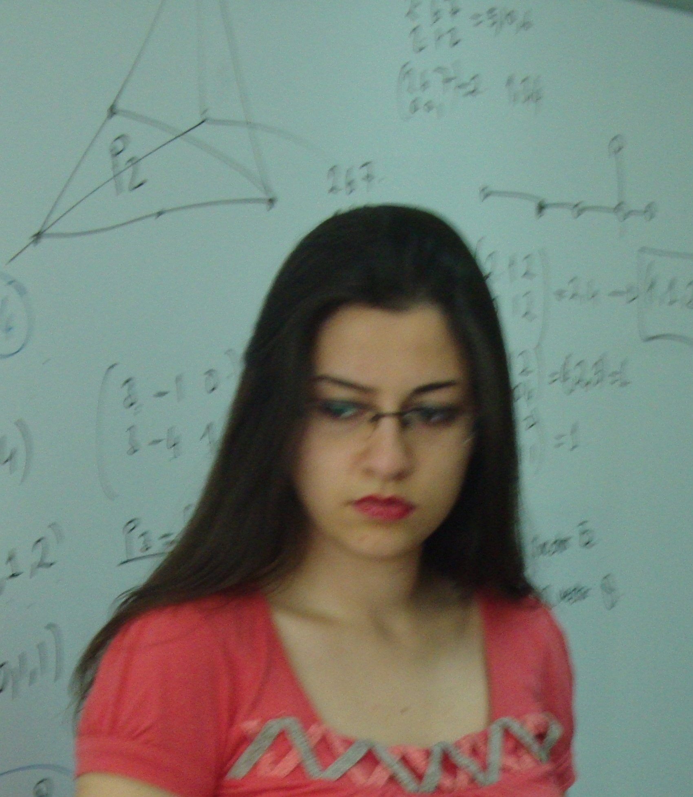
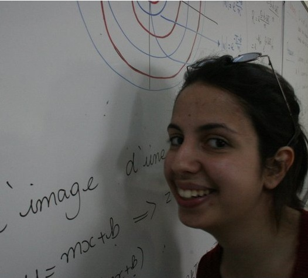

Neden Matematik Lisansı?
 (2011 mezunu Hilal Ergün ile 2012 tarihli röportaj)
Neden matematik?
Samimi bir cevap vermem gerekirse bilmiyor(d)um. Bölüm tercihi yaparken neyin içine gireceğimizi tam olarak kestiremiyoruz. Bu yüzden, asıl önemli olan insanın doğru hissettiği şeyi yapması. Ben farklı bir şeyler yapmak istedim. Doğayı anlamlandırma çabası, büyük bir amaca hizmet edecek olmak çekici ve heyecan verici geldi. "Kainat dediğimiz kitap, yazıldığı dil ve harfler öğrenilmedikçe anlaşılamaz. O, matematik dilinde yazılmış; harfleri üçgen, daire ve diğer geometrik şekillerdir. Bu dil ve harfler olmaksızın kitabın bir tek sözcüğünü anlamaya olanak yoktur." Galileo Galilei
Gsü Bana Ne Kattı?
Lisede yapılan matematikle "matematik yapmak" çok farklı şeyler. Bu kullanımın tam olarak ne anlama geldiğini işin içine girmeden çözmek güç, çözmeye çalışmak boş bir çaba. Matematik yapmanın dağınık bilgi parçalarını alıp kendi bilgilerimizle sistemli bir şekilde işleyebilme yani sistematik düşünebilme yetisi olduğunu gördüm. Düşünmeyi bildiği için "matematikçi inandırmaya çalışmaz, ispat eder" . Matematikçi olabildiğimi düşünmüyorum. Nasıl herkes sanatçı olamazsa herkes matematikçi olamıyor. Ama sanatın güzelliğinin farkına varmak kadar matematiğin güzelliğinin farkına varabilmek da yeterli bir meziyet. Fransız ekolünden bahsetmeme gerek bile yok. Prestijli bir üniversiteye girmiş olmak ayrı bir gururken, onun sağladığı imkanlarla önünüzde açılan kapıların sayısı inanılmaz. Burada okuyanlar iki dili çok iyi konuşabilen ve hemen hepsi bir Fransa deneyimi yaşamış öğrencilerdir.
Geleceğe Yönelik Açılımlar
Matematik mezununun önünde iki seçenek vardır: Pür matematik ve uygulamalı matematik. İki seçenek de kendi içinde çetin ama güzeldir. Pür matematik seçenler akademik kariyer yolunda ilerleyip en başta bahsettiğim o büyük amaca hizmet etmeye çalışırken, ben ve benim gibi daha sabırsız, pratik ve sonuç odaklı çalışanlar uygulamalı matematiğe yönelir. Uygulamalı matematikçi bilgisayar, finans gibi çeşitli alanları geleceği olarak belirleyebilir. Düşünmeyi gerçekten sevenler için felsefe de bir tercih olabilir. Bölümümüzde, yan dal ve MASS (mathématiques appliques à sciences sociales-sosyal bilimlere uygulamalı matematik) programları mevcut.(Detaylı bilgi sitede var) Ama bu programlara dahil olmasanız bile, bölümler arası işbirliği sayesinde ders programınızı çeşitlendirmeniz mümkün. Oluşturduğunuz ders programı, geleceğe yönelik ilk açılım. Dersler, hayatınızla ilgili ne istediğiniz yönünde en önemli ve yönlendirici araçlar.
Matematiği Nasıl Kullanıyorum?
Ben, şu an masterda bilgisayar uygulamalı çalışıyorum. Bu sebeple daha çok matematiğin algoritma kurma mantığını kullandığım düşünülebilir. Ama algoritmayı kurmak için önce teorik bilgilere hakim olmak gerek. Yani, yine bir teorisyen kadar matematik kullanıyorum. Eğlenceli bir şeyler görmek istiyorsanız şu siteyi incelemenizi öneririm: http://en.wikipedia.org/wiki/Computer_vision
 (2011 mezunu İrem Protakal ile 2012 tarihli röportaj)
Neden matematik?
Matematik bölümünü seçmem, lise yıllarıma denk geliyor. Üniversiteye giriş sınavlarına çalışırken onlarca test kitabını bitirmekten çok, konuyu iyice anlamayı, neyin nereden geldiğini kafamda iyice sindirmeyi amaçlardım. Bu yüzden de bu bölüm isteklerimi karşıladı. Matematik, ilkokuldan beri kafamızda inşa ettiğimiz doğal bir yapı. Bütün bunlar ‘büyük resmi’ anlamaya çalışmak için bir çaba.
GSÜ bana ne kattı?
Matematik bölümü her sene 20 öğrenci kabul ediyor. Bu yüzden, dersler kalabalık amfi derslerinden çok daha verimli geçiyor. Herhangi bir sorunuzda, hocalarla birebir iletişime geçme şansınız oluyor. Bölümü her sene, yurtdışından önemli matematikçiler ziyaret ediyor ve araştırmacılara yönelik konferanslar düzenleniyor. Bu sayede, bilimi üreten insanlarla doğrudan tanışıp seminerlerini dinleyebiliyorsunuz.
Aynı zamanda, matematik kulübü de sene içerisinde konferans, film gösterimi gibi birçok etkinlik düzenliyor. Kulüp bünyesinde öğrencilerin çıkardığı bir matematik dergisi de bulunmakta. Üniversitede, fransızca dil eğitimi veriliyor. Bunun dışında da ingilizceyi de "upper intermediate" seviyede öğrenip mezun olmanız gerekiyor. Böylece iki dile birden hakim olmuş oluyorsunuz. Sosyal açıdan, üniversite bünyesinde birçok aktif kulüp bulunuyor. Örneğin tiyatro kulübünde her sene en az bir büyük oyun çıkartılıyor ve sene boyunca oyunculuk atölyeleri oluyor.
Geleceğe yönelik açılımlar
Mezun olduktan sonra, matematik dışında bir şey yapmak isteyenler için finans, bilgisayar, biyoloji ve benzeri alanlarda birçok iş imkanı var. Ben "akademik" seçeneğini seçtim. Bu da, yüksek lisans yaptıktan sonra, çoğunlukla, doktora yapıp bir konu üzerine yoğunlaşmak ve daha sonra bir üniversitede kadroya yerleşmek anlamına geliyor. Genelde, yüksek lisans iki sene, doktora üç sene sürüyor. GSÜ matematik bölümü mezunu olmam, özellikle avrupa'daki tanınırlığı sayesinde bana akademik kariyer yapabilmem için gerekli kapıları açtı. Bonn Üniversitesi Hausdorff Enstitüsü ve Ecole Normale Superieur gibi en saygın matematik okullarından kabul almama yardımcı oldu.
Matematiği nasıl kullanıyorum?
Pür matematik üzerine yüksek lisans yaptığım için matematiği sürekli kullanıyorum. Şu anda, yüksek lisans tezimi yazıyorum. Bu da çoğunlukla çalıştığım konu üzerine şimdiye kadar yazılmış makaleleri ve kitapları okumak ve yeni fikirler üretmek üzerine kurulu bir çalışma.
© GSÜ Math. Tüm hakları saklıdır.